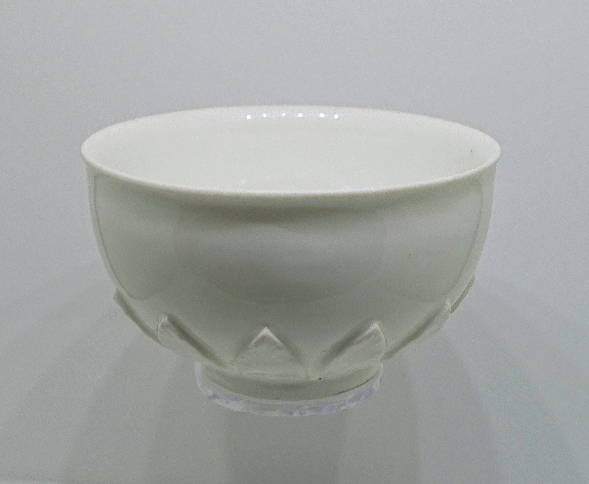

ISO 3103 is a standard published by the International Organization for Standardization (ISO) specifying a method for brewing tea, Wikipedia.
To maintain consistent results, the following are standard recommendations:

The abstract states the following: The method draws out substances...
Additional details regarding the pot and the bowl specifications.
ISO 3103 has been subjected to various critiques since its publication.
There are alternative methods proposed by various tea enthusiasts worldwide.
\[x = \frac{-b \pm \sqrt{b^2-4ac}}{2a}\] \[e^{i\pi}+1=0\]